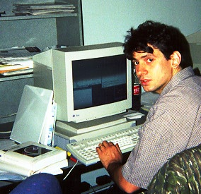

<HTML><HEAD> <TITLE>Levi Asher</TITLE> </HTML>

<BODY BACKGROUND="" BGCOLOR="#ffffff" TEXT="#000000"
LINK="#009f2f" ALINK="#00008f" VLINK="#004fcf">
<H1>Levi Asher</H1>

Two years ago I was working as a C++ programmer at the Wall 
Street headquarters of a huge and elite international bank.  My cube 
was on the sixth floor, and the marble frieze 
of the New York Stock exchange loomed outside my window.  <P>

I hated this job.  It was the kind of place where people sniffed at you 
if they didn't like your suit.  The programmers there thought they were hot 
stuff, and liked to prance around claiming they were "the best in the 
world."  What a laugh!  I'd spent the previous five years designing 
3-D vision systems for a robotics firm on Long Island.  Compared
to that work (for which I was paid much less), my new
assignments were so easy I could barely stand to do them.<P>

I'm not saying I'm a great programmer -- I'm average.  But I'm used to pushing
myself hard and producing a lot, and all my new co-workers wanted to produce
was reams of documentation about schedules and development environments and
design methodologies.  When it came time to actually make something happen,
they were clueless.  So I would ace my part of a three-month deadline in 
one month, and since I had nothing else to do for the next two months I began
surfing the Web.  I surfed the Web a lot.  Eventually I got sick of looking 
at other sites and decided to start my own, and this is how 
<A HREF="http://www.charm.net/~brooklyn/LitKicks.html">Literary Kicks</A>
got created.<P>

It was a strange situation, a peculiar mix of confinement and liberation.
I used to take breaks from writing Web pages and take walks, and 
I think I walked every street and alleyway of Lower Manhattan.  
One day I hopped on a ferry during lunch hour and rode to the 
Statue of Liberty.  I walked up the echoing circular staircase to the 
statue's crown, looked out over New York Bay, walked back down the clanging 
stairs, rode the ferry back, returned to my cube at 3:15, banged out ten or 
twelve lines of C++ code, and fired up Mosaic at 3:30.  In a way, this was 
a great life.<P>

But I was miserable.  There are few things more depressing than a boring 
job, especially a boring job where people wear expensive suits and office 
politics hangs in the air like a cloud of poison gas.   I don't think 
anybody else there was much happier than I was.  It is a telling fact that 
none of us ever read 
<A HREF="http://www.unitedmedia.com/comics/dilbert/">Dilbert</A>.
We could not stand to; we were living Dilbert.<P>

I suppose I shouldn't tell you the name of this bank, now that I've 
thoroughly dissed their technical staff.  It just wouldn't be right.
But what the fuck -- I don't work there anymore.  Here's 
<A HREF="http://www.jpmorgan.com/">their home page</A>.<P>

It was my Web work that ended up saving me.  In June '95 I
was hired by a major media/entertainment company to work on
their new Web-based online service.  Now I'm working long hours and 
learning exciting new things like perl, Java and object-relational 
multimedia databases.  I love it here.  Best of all, I don't have to 
wear a suit and tie.  Goodbye, Wall Street.  Go write some documents ...<P>

Anyway, now that I've vented all my pent-up hostility ... I'm 33 years 
old, I'm married, and I have a bunch of kids.   How many, exactly?  The 
last time I updated this home page there were two; now there's three.  
Here's me with the latest little one; isn't she cute?<P>

<CENTER></CENTER><P>

We live in a crowded co-op in Queens, the second-most unfashionable 
borough in New York City (Hi, Staten Island).  In fact the borough of 
Queens is the central motif in my second Web project, 
an experimental work of fiction in the form of a folk-rock album called 
<I><A HREF="http://www.levity.com/brooklyn/">Queensboro Ballads</A></I>.  
Queensboro Ballads was recently selected as one of the Top 5% Of The 
Web by
<A HREF="http://www.pointcom.com">Point</A>, 
and since Literary Kicks also earned this honor I guess I'm in the top 
2.5% of the Web.  Cool ...<P>

I've been a fiction writer for many years, and some of my 
stories and poems can also be found in
<A HREF="http://ftp.etext.org/Zines/InterText/intertext.html">InterText</A> 
and 
<A HREF="http://enterzone.berkeley.edu/enterzone.html">Enterzone</A>.
I was busy trying to get a novel published on paper when this Web thing 
diverted my attention, and I hope to return to this soon.<P>

My wife is also a writer, and her Web pages are
<A HREF="http://www.walrus.com/~gibralto">here</A>.
She and I are an interesting couple, because we each belong to separate 
virtual societies dedicated to utopian cultures: I'm a 
<A HREF="http://www.cs.cmu.edu/afs/cs.cmu.edu/user/mleone/web/dead.html">Deadhead</A>
and she's a 
<A HREF="http://www.walrus.com/~gibralto/ship.htm">Trekker</A> 
(Next Generation only, if you please).  We get along surprisingly well.<P>

Just for the fun of it, here's the list of 
<A HREF="http://www.charm.net/~brooklyn/Topics/LeviFavorites.html">my fifteen favorite novels</A>.<P>

If you want to see what I was like back when I hated my job, and also 
see a picture of my oldest daughter and find out what musicians and TV 
shows and world religions I like, here's 
<A HREF="../HomePages/LeviAsher94.html">my old home page</A>.   
I keep it around because I'm just a sentimental kinda guy.<P>

If you're interested in my technical environment: I do all my Web work in 
Unix, and write my pages in raw HTML using the 'vi' text editor.  There is 
no spell-checker in 'vi', which is my ready-made excuse if you find any 
errors.  I'm proud to say that no Microsoft products assisted me in the 
building of my Web pages -- that's not to say that I didn't use them, but 
just that I don't remember them ever assisting me.  I love the 
idea of the Web as an alternative creative outlet for artists, writers, 
musicians and other misunderstood people, and I intend to be here a long 
time.<P>

Thanks for listening!  I try not to say 'fuck' more than once per page.  
See you 'round the Web ... <P>

Levi Asher = brooklyn@netcom.com
</BODY></HTML>


